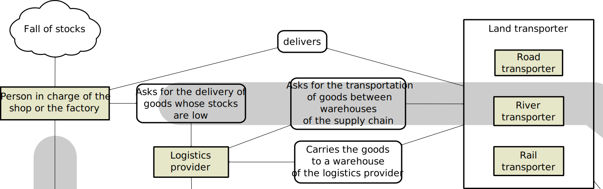

Thibaut Démare - LITIS
thibaut.demare@univ-lehavre.fr
thibaut.demare@univ-lehavre.fr
Agent-Based Approach and Dynamic Graphs to Model Logistic Corridor
ANT 2015
ABMTRANS
June 2-5, 2015
ABMTRANS
June 2-5, 2015
Agent-Based Approach and Dynamic Graphs to Model Logistic Corridor
Thibaut Démare
Cyrille Bertelle, Antoine Dutot and Laurent Lévêque
LITIS and UMR-IDEES - Université du Havre
ANT 2015 - ABMTRANS Workshop - London, United Kingdom
June 2-5, 2015
Overview
- Context
- Modelling of a logistic corridor
- Implementation
Context
How do we define a logistic corridor?
- It is a geographical space composed of urban areas and of logistic structures.
- These structures support organised flows of goods which mainly move between the urban areas, forming the logistic corridor.
- The goods enter and leave the system through well-known access nodes.
- Different constraints (spatial, economical, political, or ecological) act over the system.
- There are numerous and heterogeneous actors (importers, exporters, freight forwarders, logistic providers,...). Their behaviours and interactions with each other allow to organise the flows of goods. They are auto-organised.
Figure 1: Each actor manages a part of the flow
Problematic
- We want to improve such a system but we first have to understand how these systems are organised and structured.
- We are looking for a model which can simulate the working of a logistic corridor.
- And then we could test different scenarios and therefore provide solutions to improve the logistic system.
A multi-scale approach
The emergence of macro properties:
- The numerous and heterogeneous actors have their own local behaviours to take decisions and to interact with each other. They are auto-organised at the micro level.
- At a higher level, we can observe communities, or clusters, of actors strongly connected (e.g. the maritime cluster).
Pierre Collet defines a complex system as below:
Complex systems are every system composed of an important number of autonomous entities in interaction, creating many levels of collective organisation leading to emergent properties.
We can perceive the logistic systems as complex and we will use the concepts of the complexity science to model such a system.
Modelling of a logistic corridor
A model in two main parts
- Actors and logistic structures are modelled as reactive agents. They have defined rules about how they can interact with each other and how they must behave. A dynamic graph represents the interactions between the agents.
- The transportation network is made of dynamic sub-graphs in order to integrate multi-modality and to represent the evolution of the traffic.
Why the agent-based approach?
Specific advantages to this problem:
- Agents are compatible with spatiality.
- Agent-based models bring flexibility: it can be adapted to different logistic system with different constraints and rules (different working behaviours, different laws,...).
- The model can be easily coupled with other models such as dynamic graphs or gravitational model (e.g. Huff's model).
Why dynamic graphs?
- In the reality, the flows of goods evolve in time.
- And also, the actors do not have always the same collaborators.
- Dynamic graphs can represent that.
- The model has a discrete time. At each step, every graphs used can change:
- The number of nodes and edges (the topology is updated).
- The data on these nodes and edges (e.g. the capacity of vehicles on a road).
Actors are modelled as reactive agents
Figure 2: Network representation of possible interactions between agents
Actors modelled as reactive agents

Figure 2a: Network representation of possible interactions between agents
Actors modelled as reactive agents

Figure 2b: Network representation of possible interactions between agents
Actors modelled as reactive agents

Figure 2c: Network representation of possible interactions between agents
Actors modelled as reactive agents

Figure 2d: Network representation of possible interactions between agents
Figure 2d: Network representation of possible interactions between agents
The dynamic transportation network coupled with agent
Figure 3: Multi-modal dynamic network
Implementation
The implementation
- We implemented the model as a step-by-step simulation into the agent-based simulation platform GAMA.
- We use real data on the Seine axis to check its validity and to make measures.
- The Seine axis is mostly represented by the road (around 90% of the traffic is by road).
- The implemented agents:
- Final consignees: consume stocks and choose logistic providers
- Logistic providers: build and manage supply chain to outsource stocks
- Warehouses: spread over territory, they provide storage surface.
- One unique provider: he plays the role of access node to the territory

Figure 5: the territory and some agents of the simulation
What can be configured or measured?
What can be configured?
- The input data: the transportation network, the list of agents,...
- We can configure the "coefficient of diminution": it represents the level of consumption of the inhabitants for each final consignees according to their sales areas.
- We can configure the restock strategy of logistics providers.
- Logistics providers can use two different strategies to build supply chains.
- ...
... or measured?
- Measures of logistics performances: time to deliver goods and number of stock shortages. These measures can be computed for each agent, for regions, or for the whole system.
- Schimbel's index to measure accessibility of agents.
- Highlight paths with the highest values of traffic.
- Detection of spatial cluster (logistic areas) thanks to neighbourhood graphs.
- Every graphs used in the simulation can be exported to be study with algorithms of graph theory:
- Betweenness centrality.
- Distribution of connected components.
Checking validity and impacts of parameters
| Coefficient of diminution |
3 | 4 | 5 | |||
| Threshold under which the logistics provider orders the delivery (in percentage) | 20% | 30% | 20% | 30% | 20% | 30% |
| Average number of stock shortages after 2000 steps (1 step = 1 hour) | 654 | 114 | 234 | 35 | 91 | 31 |
Conclusion
To sum up
- Logistic corridors can be seen as complex systems.
- We used an agent based model and dynamic graphs to represent such a system.
- It brings the possibility to represent the dynamics of such a system and the adaptability to different logistic corridors.
- The model has been implemented on GAMA and tests can be made on the Seine axis.
- We can configure the consumption and the restock behaviours.
Perspectives
- For the moment, we are implementing different behaviours of the logistic providers to build supply chain and we are comparing their performances.
- We want to increase the number of provider agents in the simulation to see the impacts of the number and the position of access nodes.
- We want to study the interaction network in order to detect the communities of actors.
Thank you for your attention !
Any questions?
thibaut.demare@univ-lehavre.fr